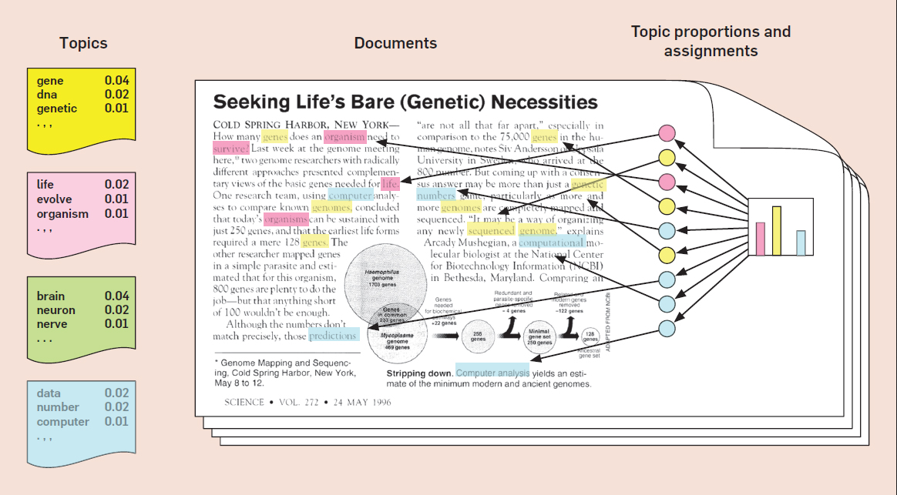
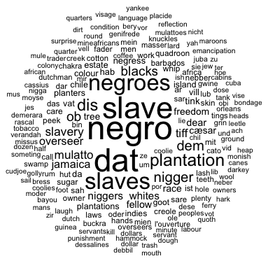
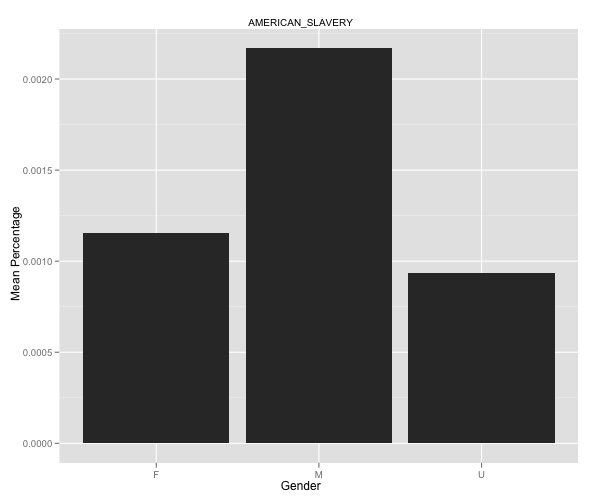
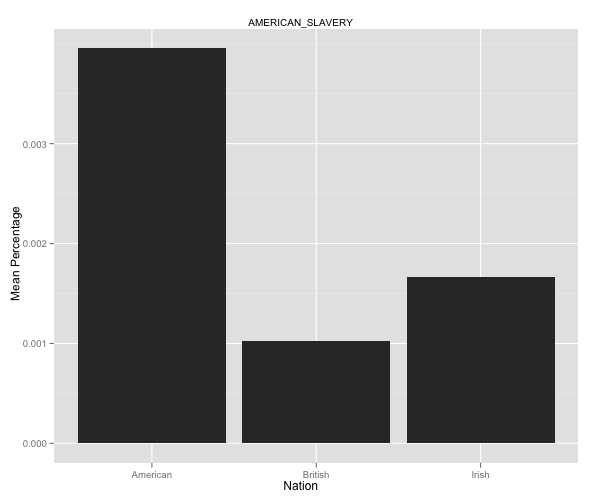
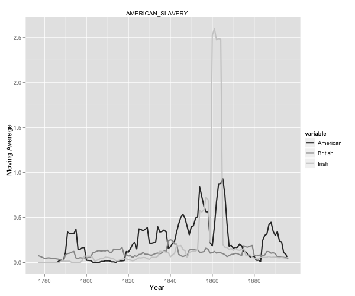
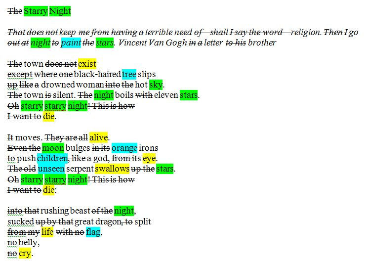
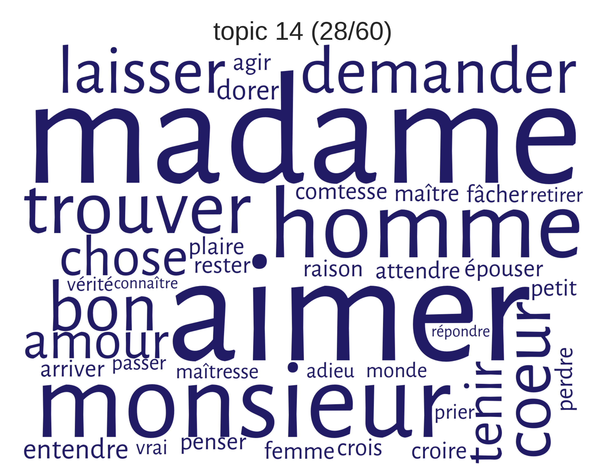
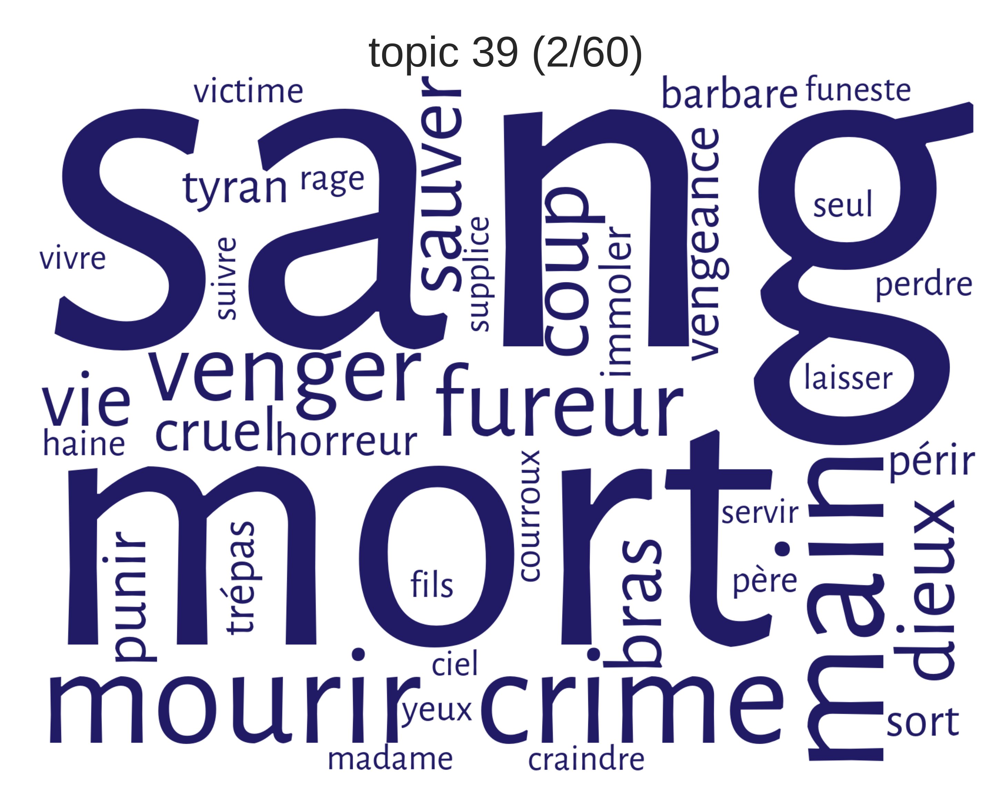
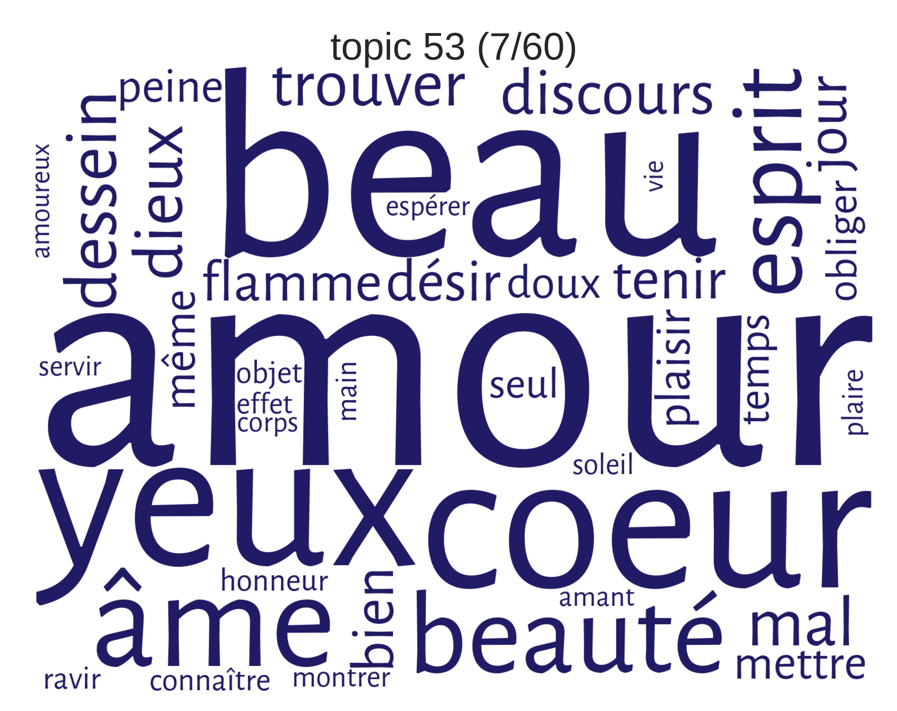
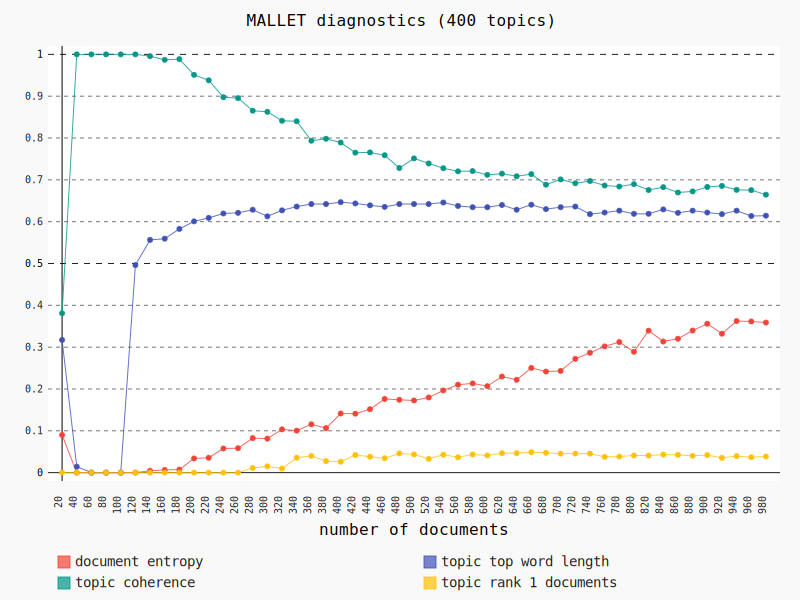

Literatur aus der Vogelperspektive:
Topic Modeling als Methode für Themenanalyse in großen Textsammlungen
Ulrike Henny-Krahmer
(CLiGS, Würzburg)
DGAVL-Workshop "Digital Humanities in der Literaturwissenschaft"
Bochum, 7. Juni 2017
Folien: https://hennyu.github.io/dgavl_17


Überblick
- Was ist Topic Modeling?
- Beispielanalysen:
- Jockers, Roman
- Rhody, Lyrik
- Schöch, Drama
- "Schrauben": Korpuskuratierung & Modellparameter
- Fazit
Was ist Topic Modeling?
Was ist Topic Modeling?
- Topic Modeling ist eine Methode der quantitativen Textanalyse
- Ziel: Aufdecken "versteckter" semantischer Strukturen
- Hintergrund: Distributionelle Semantik
- J. R. Firth: "You shall know a word by the company it keeps" (1957)
- Wiederkehrende Themen / Motive / Diskurse werden identifiziert
- Wichtig: automatisch & ohne explizites semantisches Wissen!
Wie funktioniert Topic Modeling?
- gegeben: Dokumente & Wörter
- gesucht: versteckte "Topics"
- Statistik:
- Welche Wörter kommen innerhalb von Dokumenten und zwischen Dokumenten gemeinsam vor?
- Ableiten von Topics aus den Wortverteilungen
- Ergebnis: ein Topic-Modell
Topic-Modell: Topics mit Wörtern
 David M. Blei (2012): Probabilistic Topic Models. Communications of the ACM, Vol. 55, No. 4, p. 78.Topic-Modell: Topics mit Wörtern
| 0 | katholisch religion könig katholik kaiser protestantisch handeln niederland provinz protestantismus |
| 6 | erziehung erzieher tugend mensch ideell zögling gesellschaft abhandlung historisch inner |
| 7 | grenze nationalität heutig sprachgrenze südlich süddeutsch gebiet inner muttersprache einheitsstaat |
| 14 | bahn bahnlinie konzession bahnbau projekt geplant annullierung britisch anwenden ausdrücklich |
| 27 | virtuose pianoforte talent vater virtuos knabe welt klavierlehrer portrait instrument |
Tools
| Name | Developer | Language | Link | ||
|---|---|---|---|---|---|
| MALLET | machine learning for language toolkit |  |
David Mimno | Java | http://mallet.cs.umass.edu/topics.php |
| Gensim | topic modeling for humans | |
Radim Řehůřek | Python | https://radimrehurek.com/gensim |
| tmw | topic modeling workflow |  |
Christof Schöch | Python | https://github.com/cligs/tmw |
| dfr-browser | a simple topic-model browser | Andrew Goldstone | JavaScript | http://agoldst.github.io/dfr-browser/ |
Beispielanalysen
Jockers (2013), Roman
- Korpus: 3.346 englischsprachige Romane (England/Schottland/Wales, Irland, USA) aus dem 19. Jahrhundert
- Ziele: thematischen Reichtum im Korpus erfassen; narrative Sujets und wiederkehrende Themen und Motive verstehen
Jockers (2013), Roman
Vorgehen
- Segmentierung der Romane (1000 Wörter)
- Lemmatisierung (Substantive)
- Entfernen von häufigen Wörtern (stopwords) und Eigennamen
- Topic-Modeling mit Mallet (500 Topics)
- Auswertung Topic-Modell + Metadaten
Jockers (2013), Roman
Ergebnisse
|  |  |
|  |  |
{kind=link}
{kind=link}
{kind=link}
{kind=link}
Jockers (2013), Roman
Ergebnisse
- Tendenzen nach Nation, Gender, Zeit
- Bestätigung mancher Intuitionen, Herausforderung anderer
"The words returned from the model paint both setting and subject; the result is a useful and quantifiable representation of a very particular theme [...] These are macro trends we are exploring, and they provide a generalized view of the whole"
Rhody (2012), Lyrik
- Korpus: 4500 ekphrastische Gedichte in englischer Sprache (hauptsächlich 20. Jahrhundert)
- Ziele: herausfinden, wie Topic Modeling-Algorithmen mit Bildsprache umgehen; Tradition und Genre der Ekphrase auf großer Datengrundlage untersuchen
Rhody (2012), Lyrik
Vorgehen
- Metadaten: Autor, Gender
- keine Segmentierung der Texte (vollständige Gedichte)
- keine Lemmatisierung
- Entfernen von häufigen Wörtern (stopwords)
- Topic-Modeling mit Mallet (60 Topics)
Rhody (2012), Lyrik
Ergebnisse
| 4 | de la el en green verde con los mi se |
| 6 | blue red white bird color green yellow black wings birds |
| 9 | thy thou thee art thine st doth heaven hast hath |
| 32 | night light moon stars day dark sun sleep sky wind |
| 54 | tree green summer flowers grass trees flower spring leaves sun |
| 58 | gertrude guitar inside blue stein beginning sieve cloud type end |
Rhody (2012), Lyrik
Ergebnisse: The Starry Night (Anne Sexton)
{kind=link}
Rhody (2012), Lyrik
Ergebnisse
- Topic-Typen: OCR/Sprache/Dialekt; Topics langer Gedichte; semantisch transparente Topics; semantisch opake Topics
"My research confirms, to a degree, Ted Underwood’s suspicion that topics in literary studies are better understood as a representation of “discourse” (language as it is used and as it participates in recognized social forms) rather than a thematic string of coherent terms."
Schöch (2017), Drama
- Korpus: 391 französische Dramen der Klassik und Aufklärung (1630-1789)
- Ziele: Unterscheidung von Untergattungen (Tragödie, Komödie, Tragikomödie) anhand von Topic-Verteilungen; ermitteln von Topic-Typen
Schöch (2017), Drama
Vorgehen
- Segmentierung der Dramen (1000 Wörter)
- Lemmatisierung (Substantive, Verben, Adjektive)
- Entfernen von häufigen Wörtern (stopwords) und Eigennamen
- Topic-Modeling mit Mallet und tmw (60 Topics)
- Auswertung Topic-Modell + Metadaten
Schöch (2017), Drama
Ergebnisse
|  |  |
|  |

|
{kind=link}
{kind=link}
{kind=link}
Schöch (2017), Drama
Ergebnisse
- untergattungsspezifische Topics werden erkennbar ("mittelspezifisch")
- viele der gefundenen Themen lassen sich in Beziehung zu klaren, abstrakten Themen setzen (z.B. Liebe, Tod, Verbrechen)
- aber auch Topics, die sich auf Figuren, Setting, bestimmte Tätigkeiten beziehen
"The latter types of topics [...] show that taking a method such as Topic Modeling, developed initially for collections of non-fictional prose such as scholarly journal articles or newspapers, and adapting it to the domain of literary texts, actually changes the meaning of the word 'topic'"
"Schrauben":
Korpuskuratierung & Modellparameter
Korpuskuratierung
- Welche Dokumente?
- Wie viele Dokumente?
- Segmentierung
- Stopwords
- Lemmatisierung
Korpuskuratierung
Wie viele Dokumente?
{kind=link}
Modellparameter
- Anzahl der Topics
- Iterationen
- Hyperparameter (Optimierung)
Fazit
- Topic Modeling kann aufdecken, wie Themen in Sammlungen literarischer Texten entfaltet werden
- Topics sind dabei oft nicht abstrakte Themen
- Entscheidungen hinsichtlich Korpus und Modell beeinflussen Art und Qualität der Ergebnisse
- ein Topic-Modell und seine Interpretation sind vor allem eine Sicht auf die Texte aus der Distanz
Literaturhinweise
- Blei, David M. (2012): "Probabilistic Topic Models." In: Communications of the ACM 55.4. doi:10.1145/2133806.2133826.
- Jockers, Matthew L. (2013). Macroanalysis. Digital Methods & Literary History. Urbana, Chicago, and Springfield: University of Illinois Press.
- Rhody, Lisa M. (2012): "Topic Modeling and Figurative Language." In: Journal of Digital Humanities 2.1. http://journalofdigitalhumanities.org/2-1/topic-modeling-and-figurative-language-by-lisa-m-rhody/
- Schofield, Alexandra; Magnusson, Måns and David Mimno (2017): "Pulling Out the Stops: Rethinking Stopword Removal for Topic Models." In: Proceedings of 15th Conference of the EACL. Vol. 2, Short Papers, pp.432-436. https://mimno.infosci.cornell.edu/papers/schofield_eacl_2017.pdf
- Schöch, Christof (2017): "Topic Modeling Genre: An Exploration of French Classical and Enlightenment Drama." [Preview] In: Digital Humanities Quarterly 11.2. http://www.digitalhumanities.org/dhq/vol/11/2/000291/000291.html
- Schöch, Christof (2016): "Topic Modeling with MALLET: Hyperparameter Optimization". In: The Dragonfly's Gaze, Marseille: Open Edition. https://dragonfly.hypotheses.org/1051.
Vielen Dank!
Folien: https://hennyu.github.io/dgavl_17
CLiGS-Gruppe: http://cligs.hypotheses.de/